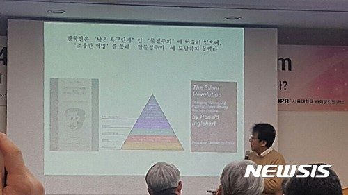

등록일 2017-03-02
서울대 '제4회 박태준미래전략연구포럼' 개최
"한국인 가치관, 종교·권위 뒷전…경제·물리적 안정 중요"
한국, 공익성·공정성 OECD 30개국 중 꼴찌
【서울=뉴시스】박영주 기자 = 한국인은 종교나 전통적 가족가치, 권위 등은 중시하지 않지만 경제적·물리적인 안정은 중요하게 생각하는 경향이 강하다는 연구 결과가 나왔다.
장덕진 서울대 사회학과 교수는 24일 오후 서울 호암교수회관 컨벤션센터에서 진행된 '제4회 박태준 미래전략연구포럼'에서 한국인의 가치관을 데이터로 분석해 발표했다.
장 교수에 따르면 한국인은 강한 세속 합리성과 생존적 가치관이 조합돼 있다. 이혼, 낙태, 안락사, 자살 등은 너그럽게 바라보는 반면 신뢰와 관용의 수준은 매우 낮다는 것이다.
장 교수는 최대 100개국을 대상으로 사람들의 인식이 어떻게 변화했는지를 관찰한 결과 크게 전통적 가치 대 세속합리적 가치, 생존적 가치 대 자기표현적 가치로 나눠진다고 분석했다.
그 결과 가난한 나라일수록 종교와 부모, 자식 간의 유대, 권위를 중시하는 전통적인 가치관과 경제·물리적 안정을 중시하며 신뢰와 관용의 수준은 낮은 생존적인 가치관을 보였다.
대부분 나라의 사람들은 생활 환경이나 수준이 변하면 가치관도 따라 변했다. 하지만 한국인은 1981년부터 1996년까지 급격한 경제성장을 이뤘음에도 가치관이 차이를 보이지 않고 그대로 머물러 있었다.
또 서울대 사회발전연구소가 경제협력개발기구(OECD) 30개 국가의 공민성과 공개성을 조사한 결과 한국은 각각 29위와 28위로 나타났다. 공화주의 가치를 나타내는 공익성과 공정성도 모두 30위로 꼴치를 차지했다.
송복 연세대 명예교수는 이같은 현상이 나타나는 이유에 대해 "한국인은 내가 잘나고 능력있고 경쟁력이 있어서 높은 자리에 올라와 있고 지금 누리는 것은 내 피와 땀과 눈물의 대가라고 생각하는 것"이라고 진단했다.
송호근 서울대 사회학과 교수도 "한국인은 더불어 사는 시민, '공민'(共民)의 부제 때문"이라고 비판했다.
송 교수는 박근혜 대통령 탄핵 촉구 촛불집회에 대해선 긍정적으로 평가했다.
그는 "광화문에 나가보니 고소득자와 고학력자가 많았다. 교양시민이 전에는 자기 권리를 과도하게 주장하는 이기적인 시민이었는데 드디어 책임의식을 느끼고 있는 것"이라며 "권리와 책임이 균형을 이루는 것을 보이기 시작했다는 점에는 감동했다"고 말했다.
다만 헌법재판소(헌재)의 결과에 승복해야 한다고 강조했다. 점점 과격해지는 태극기 집회와 촛불 집회로 인해 탄핵 심판 이후 거리의 격돌이 우려된다는 것이다.
송 교수는 "처음 촛불시위 모습은 도덕 정치를 회복해달라는 요구였다고 판단한다. 도덕성이 훼손되니깐 할 수 없이 법치로 몰려왔다"며 "법치로 결정돼야 할 마지막 순간이 다가오는데 이제는 법치가 아니라 서로의 힘겨루기로 갔다"고 우려했다.
그는 "헌재 결정을 안 받아들이고 거리의 격돌로 발전할 위험성이 많다"며 "사회 지도자들인 협회의 기관장들은 분노를 자제하고 헌재의 결정을 받아들여야 한다는 성명을 계속해서 발표해야 한다"고 조언했다.
gogogirl@newsis.com
[출처]
http://www.newsis.com/view/?id=NISX20170224_0014725899&cID=10205&pID=10200

